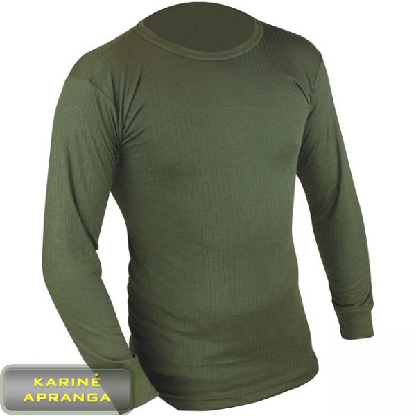

Welcome to terminiai apatiniai
Kokie terminiai apatiniai rūbai yra šilčiausias? | designremont.club
2020.10.29 03:58
Skip to content
designremont.club
Menu Móda Namas Jedzenie Mados Potraviny Home Mados Kokie terminiai apatiniai rūbai yra šilčiausias? MadosKokie terminiai apatiniai rūbai yra šilčiausias?
29.06.2018
Dabar parduotuvėse yra didžiulis pasirinkimas iš įvairių terminių apatinių drabužių, taip pat kaip ir akys, išliekančios visomis kryptimis iš šio asortimento. Ir sintetinės medžiagos ir natūralus, ir skirtingi modeliai ir skiriasi dizainas kiekvieno skonį ... Kai pirmą kartą nusprendė išbandyti šiluminės apatiniai privalumus, tada pasirinkimas bus sunku padaryti, nes kiekvienas modelis turi savo privalumų ir tinka gerai apibrėžtas programas. Pavyzdžiui, sporto idealas yra terminis apatinis trikotažas, kuris pirmiausia gerai pašalina drėgmę, o antroje jau turi šilumos izoliacijos savybes, nes aktyvių sporto metu jūs vis dar neužšalėsite. Tačiau čia kasdieniniam dėvėjimui būtina turėti tikrai šiltą terminį apatinį trikotažą, nes jūs neturėsite noro eiti iš namų į darbą norų kulniukais. Bet kaip jūs nustatote, kurie terminiai apatiniai yra šilčiausias? Paimkime arčiau.
Šilčiausias moteriškas šilumos apatinis trikotažas
Pirmiausia norėčiau atkreipti dėmesį į tai, kad renkantis terminį apatinį trikotažą kasdieniniam dėvėjimui, reikia atkreipti dėmesį į tai, kaip jis atliekamas. Modelis turėtų būti patogus, elastingas, plonas, kad net pagal sandarius aprangos drabužius jis nebūtų matomas. Todėl prieš pirkdami visada atidžiai prižiūrėkite skalbinius. Be to, visada žiūrėkite etiketėje pateiktą etiketę, nes ji visada parodo, kokiomis temperatūromis geriausia dėvėti. Miestas yra pakankamai šiluminis apatinis trikotažas, skirtas temperatūrai nuo nulio iki dvidešimt laipsnių žemiau nulio ir drobės žemesnės temperatūros dažniausiai būna tik sporto, ir dėvėti jį įprastomis kasdienėmis drabužiais nėra ypač patogu. Taigi būkite atsargūs renkantis.
Apskritai šiluminės apatinės šilumos izoliacijos savybes lemia medžiaga, iš kurios ji pagaminta. Pavyzdžiui, apatiniai sportiniai kostiumai yra pagaminti iš specialios sintetinės medžiagos, kuri gerai pašalina drėgmę, apsaugo kūną nuo prakaitavimo ir tokiu būdu išsaugo šilumą. Bet kadangi mieste nebus paleisti ir atitinkamai prakaituos, geriau pasirinkti terminę apatinę iš natūralių medžiagų. Jis pirmiausia šildys. Šiltas terminis apatinis trikotažas, be abejo, yra vilnonis. Vilna gali būti derinama su kitomis medžiagomis, net sintetinėmis medžiagomis, kurios paprastai įdėtos, kad skalbiniai būtų elastingi. Tačiau reikia nepamiršti, kad toks super šiltas vilnos terminis trikotažas, priešingai nei iš sintetinių audinių modelių, prakaitas neduoda ir yra impregnuota su jais, todėl netinka aktyviam poilsiui. Pavyzdžiui, jei jūs sėdėtės joje biure, tu negali galvoti apie daugiau šilumos.
Post navigation
Previous
Previous post:Hugh Jackman przyznał, ki je bil že gotowy, požięna się z Rosomakiem
Next
Next post:Kaip susieti šiltą skarą?
Leave a Reply Cancel reply
Categories
Follow us
facebook twitter instagram pinterest Sylvesterova matka Stallone Jak ugotovować szczupaki w piekarniku w folii? Krásne plné postavy Mušle v cesnakovej omáčke Vokietijos bulvių salotos Stanowisko do ognia Istukan kalsifiointi Stopudovo dla miłości: 30 najkvalitetnejših najnižjih stopenj! Pilates doma Pięciornik biały przeciwwskazania Gabardino sijonas Eva Longoria je pokazala, da nima nobene težave s strojno opremo Katsauksen kirja “Space” Dmitri Kostyukov ja Zina Surova Pomarančový džús zaujímavé spôsoby, ako vytvoriť zdravý nápoj Kaip suspausti? Vaterlo Odstraňování kávy Voide YM BC lichen-kissoille Aivar na zimu recept Meilė yra bloga Täytetyt kanan kaula Prsia po kŕmení Draniki bez mouky Zda je možné ukončit těhotenství? Oddzielna dieta na odchudzanie Jak se pomstít pachateli? Jak si vybrat zralé avokádo? Ako zdobiť listy hrozna pre dolmu? Kerma keitto krutonilla Co se máš na setkání spolužáků? Spermogramma kaip pasiruošti? Ženské obchody Happi-cocktail Vaikas lynėje yra už ir prieš Mikä on hyödyllistä voikukkien hilloista? Hladina hluku chladničky Boragon hyödyt ja haitat Gdzie jest Makedonija? Ako sa vykonáva spirometria? Chcę dziecko od czego zacząć? Znaki wodne Sears Ronan a Oscar 2016 Impulsinis purkštuvas Kuinka nopeasti aurinkoa auringossa? Krevety na grilu Gulasz z królika Anita Lutsenko rasvanpolttoharjoitukset Cactus Epiphyllum Dreamland lääketieteelliset ominaisuudet Příčinou průjmu může být hlíst Kuinka tehdä joulukortille tervehdyskortti? Solidarność kobiet Metrorrhagija Naisen lisääntymisjärjestelmä Terapia fotodynamiczna Kolagénový zábal na vlasy Kompleks čwiczeń z skakanką Persoonallisuuden ominaisuudet Nowoczesna odzie Zdaj Taistelu heinäsirkkoja vastaan Kodėl žmonės susituokę? Pripravte sa do školy Virtual sex mitä se on ja miten se käsitellään? Biscuit na limonádu v multivariaci Pyrogeenit gynekologiassa Schnitzel iš vištienos krūtinės Modni kolor szminki 2016 Pomidory w cieście Monastinė arbata nuo diabeto Marinuotas liežuvis Cap Polo originální a stylová čelenka Šedé semišové topánky Je možné po školení vypít kefír? Toric värillinen piilolinssi Toasty s cesnakom a pivom Stew s omáčkou nejlepší recepty v troubě multivarke nebo v hrnci Kiek metų yra Kalėdų senelis? Tenisky Nike Huarachi Täytetyt omeletti Proč sní o mrtvých? Kolor nago Hovězí maso v čínštině Recept na perník Man-Aries, kompatibilita medzi ženami a Scorpio Chashushuli Georgian parhaat reseptit ruoanlaittoon herkullisen valkoihoisen ruokalajin Irina Шейк į maudymosi kostiumėlį Grybų ikrai su morkomis ir svogūnais Parfém John Galliano Strynas Mięso w królewski sposób Plátky pečene na pečivo Ar į mikrobangų krosnelę galima įdėti silikono formą? Czy mogę schudnąć na jajach? Chrysanthemum kambarys: priežiūra Ciężka dostawa Entä jos juna lähti ilman sinua? Ženský modrý oblek Karhunvatukka ruoanlaitto reseptejä “Zem” od buriny Robert Downey Jr. w młodości Buddy Winkle je nehorázna babička https://www.google.com/mymaps/viewer?mid=1xWsp7RlqwZSpEskcAWL_kikd1OugZT29 Close Menu Móda Namas Jedzenie Mados Potraviny CloseRelated Post
Vintage vaizdas
29 Jun 2018Lapės liemenė
29 Jun 2018Sharon Stone be makiažo
29 Jun 2018Su kuo dėvėti megztas pėdkelnes?
29 Jun 2018Harley Quinn atvaizdas Helovynui
29 Jun 2018Vaizdai, skirti fotografuoti gatvėje
29 Jun 2018Šilumos smūgis simptomai ir gydymas suaugusiesiems
Siūlių lapelis dėl sąnarių skausmo
Kaip gydyti reumatą?
Mastoiditas savybės, simptomai, gydymas, prognozė
Pomponai akyse, plaukai ant nagų ir dar 34 šokiruojančios grožio tendencijos Instagram!
Ar galiu pastoti be orgazmo?
Kaip padaryti skrandžių agaric tinktūros?
Kaip užpulsti krūva suaugusiesiems?
Za maską Sukcesu Rihanna ukrizi miške in moške in macierzyństwie
Menestyksen maski takaa Rihanna piilottaa rakkauden ja äitiyden ajatukset
Kamizelka lisa
Vintage obraz
Copyright All rights reserved | Theme: Infinity News by Themeinwp .
